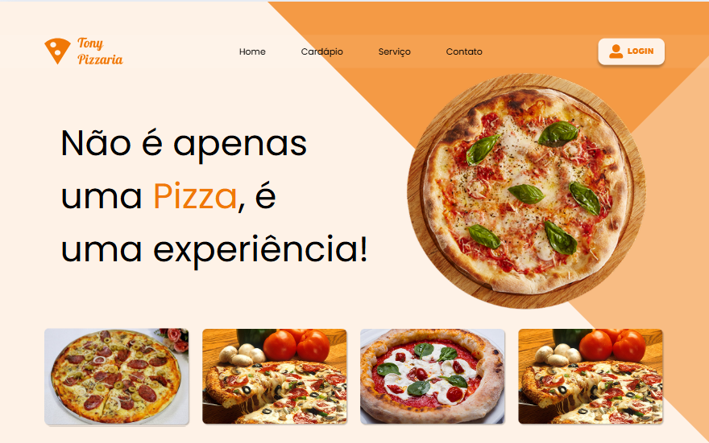
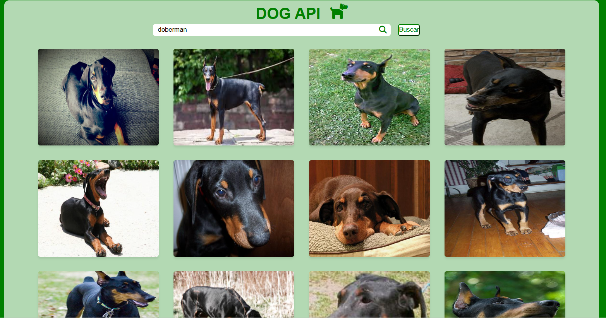
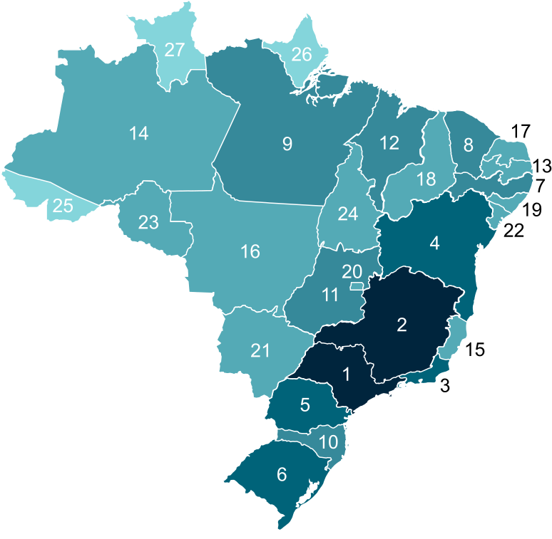

Prazer me chamo Breno Oliveira, Seja bem-vindo ao meu Portifólio profissional
Sobre:
iniciando minha carreira na área de programação. Atualmente, curso Desenvolvimento de Sistemas no SENAI de Jandira. Neste portfólio, apresento minhas habilidades e projetos desenvolvidos ao longo dos dois semestres do curso, refletindo minha evolução técnica e dedicação à área de tecnologia. Tenho como objetivo me tornar um desenvolvedor full stack, unindo conhecimentos de front-end e back-end para criar soluções completas e eficientes.
Visão:
Durante este ano, aprofundei meus conhecimentos em diversas áreas da tecnologia, o que ampliou minha visão sobre como as coisas funcionam. Ao desenvolver sistemas, percebi que tudo tem um propósito e segue um processo estruturado até sua criação e utilização. Compreendi também que as ferramentas que utilizamos hoje são frutos do acúmulo de conhecimento de inúmeras pessoas, todas movidas pelo mesmo objetivo: facilitar a vida de outras. Essa percepção me inspira a continuar aprendendo e me motiva a, no futuro, criar aplicações que também possam ajudar e impactar positivamente a vida das pessoas.
Habilidades
Linguagem:
- Java
- JavaScript
- SQL
- HTML
- CSS
Framework:
- Tailwind CSS
- Node js
Banco de banco:
- MySQL
Plataforma:
- Git / GitHub
- VS Code
- Figma
- Postman
Projetos

Página de pizzaria desenvolvida como projeto didático no curso técnico de Desenvolvimento de Sistemas do SENAI, aplicando conceitos de estruturação web, organização de conteúdo e boas práticas de layout em seções como Home, Cardápio, Serviços e Contato.
- HTML
- CSS
Tecnologias:

Aplicação web que exibe imagens de cães conforme a raça pesquisada, utilizando JavaScript assíncrono com fetch e async/await para consumir uma API. Desenvolvida em HTML, CSS e JavaScript no VS Code, com foco na prática de integração de APIs e manipulação dinâmica de dados.
- HTML
- CSS
- JavaScript
Tecnologias:
API desenvolvida na disciplina de Back-end como atividade prática para exercitar a criação de métodos GET. O projeto utiliza um arquivo de texto como fonte de dados, contendo informações de usuários, contatos e mensagens, que são processadas e retornadas pela aplicação.
- Node Js
Tecnologias:

Projeto desenvolvido como atividade prática para aplicar os conteúdos aprendidos em sala. A aplicação, construída em Node.js e testada no Postman, processa um arquivo com mais de 20 mil linhas contendo dados de regiões, estados, capitais e cidades do Brasil, e foi hospedada no Render para acesso online.
- Node Js
Tecnologias:
Formação
O curso técnico em Desenvolvimento de Sistemas do SENAI forma profissionais capacitados para planejar, desenvolver e implementar sistemas computacionais, aplicando boas práticas de programação, banco de dados, front-end e back-end. O curso alia teoria e prática em projetos reais, preparando o aluno para atuar no mercado de tecnologia com foco em qualidade, inovação e eficiência no desenvolvimento de software.
Periodo: 01/20/2025 - 06/20/2026